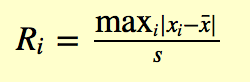
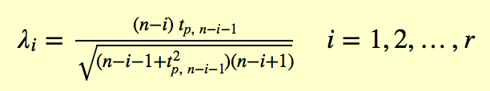
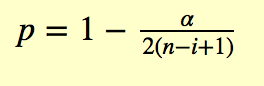
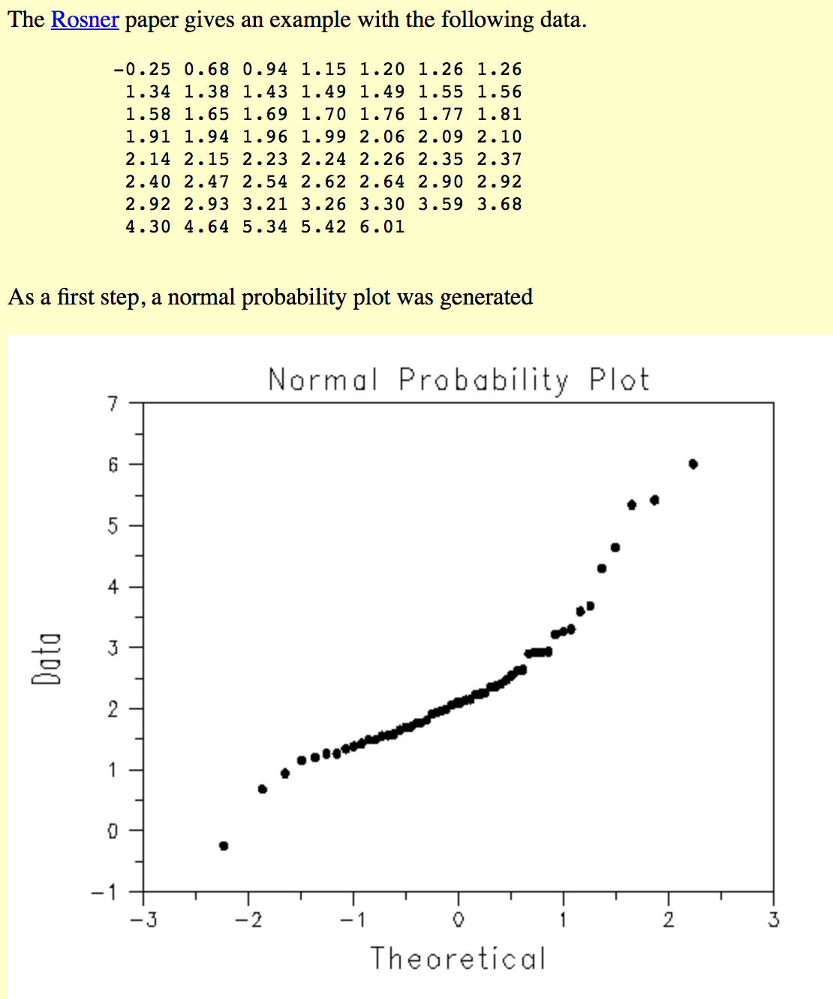
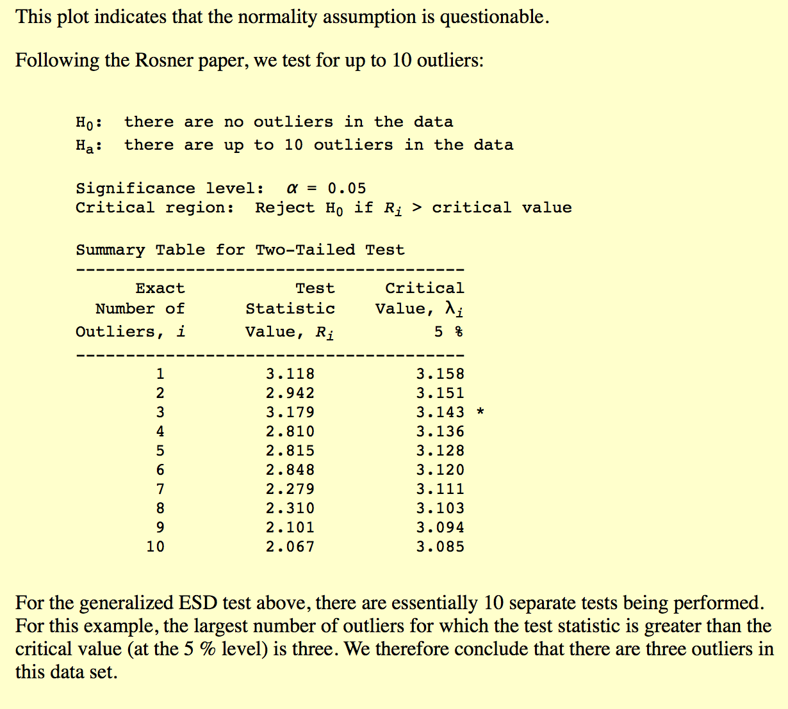

generalized (extreme Studentized deviate) ESD: 检测一个或多个异常值在一个近似服从正太分布的单变量数据集中
原文翻译自 Generalized ESD Test for outliers
参数： r 异常点个数上限
给定上限，generalized ESD 独立执行r次检验，检验只有一个 outlier，检验只有2个outlier。。检验有r个outlier
- 定义： H0: dataset 中无outlier ； H1： dataset中最多有r个outlier
test： 计算统计量

x平均：样本均值，s代表样本标准差，移去使得观测值中|xi-x均|最大的点，然后对于剩余n-1个计算上述统计量。重复上述过程直到r个观测值被移去。即r次检验统计量R1，R2。。Rr显著性水平α及临界域
对于r检验统计量，计算以下r临界值：

t p,v 代表从t分布中v水平的百分比 
outlier的数量通过寻找最大的i使得 Ri> λi

从实验中可以看出，检验统计量大于临界值的最大的outlier数量是3，因此我们认为dataset中有3个outlier